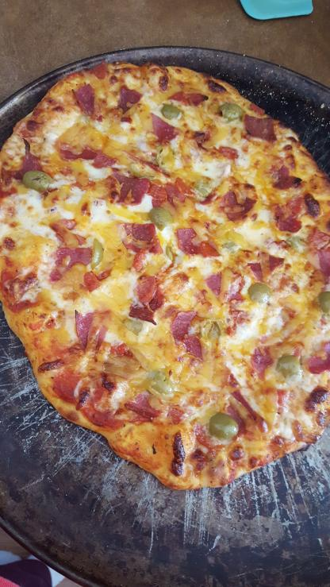

Recipe for perfect Homemade Pizza
Heat up those ovens
Dough Ingredients:
- 5.63 oz Flour
- 1 tbsp Olive Oil
- 1 tsp Quick Rise Yeast
- 1/2 cup room-temp Water
- 1/2 tsp Salt
- 1/2 tsp Granulated Sugar
Toppings:
- 4oz Red Sauce
- 4oz Mozzarella Cheese
- 2oz Cheddar Cheese
- 30g Pepperoni
- 10 Green Olives
- 2 Strips Thin-Cut Bacon
- 1/2 tsp Fresh-Ground Rosemary
Instructions:
- Pour water into mixing bowl and sprinkle yeast evenly on top. Follow by sprinkling sugar on the yeast. Let sit for 10 minutes.
- Pour in olive oil, flour, and salt. Mix until it forms a single, homogenous ball.
- Oil bowl and cover doughball in bowl with plastic wrap. Allow to rise for one hour, or until dough has doubled in size.
- Fold dough to remove the air. Allow for another rise like the last, or place in the fridge until using.
- Preheat oven to 425 degrees Farenheit. Roll out dough on a 14 inch baking sheet covered in cornmeal, to a quarter inch thickness.
- Spread sauce on dough, then sprinkle rosemary evenly. place toppings in any desired order evenly across the surface.
- Place pizza in oven and allow to bake for 15-18 minutes, or until the cheese starts to brown.
- Allow pizza to cool for 5 minutes before slicing and serving. 1/8th of pizza = 230 calories.
